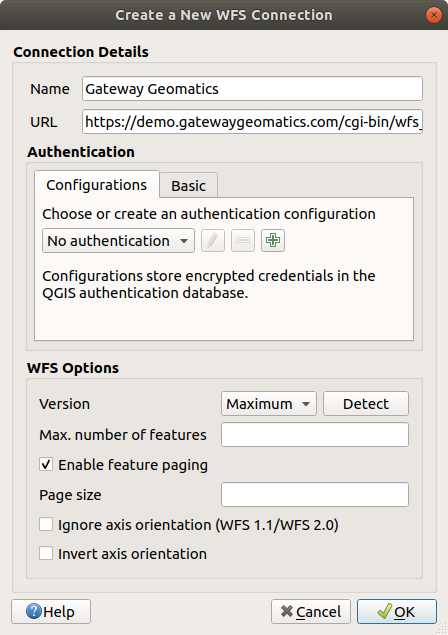

重要
翻訳は あなたが参加できる コミュニティの取り組みです。このページは現在 97.12% 翻訳されています。
23. OGC / ISOプロトコルの操作
Open Geospatial Consortium (OGC)は世界中の300以上の企業、政府、非営利団体、研究組織が集まった国際的組織です。ここのメンバーは地理空間コンテンツとサービス、GISデータの解析と交換のための標準の開発と実装を行っています。
GISを含む、相互運用可能な位置・地理空間技術の特定のニーズに対応するため、地理的地物の基本的なデータモデルを記述する仕様がOGCによって次々に開発されました。詳細は https://www.ogc.org/ にあります。
QGISでサポートされている重要なOGC仕様は以下のとおりです:
WMS --- Web地図サービス (WMS/WMTS クライアント)
WMTS --- Web 地図タイルサービス (WMS/WMTS クライアント)
WFS --- Web 地物サービス (WFS および WFS-T クライアント)
WFS-T --- Web 地物サービス - トランザクション的 (WFS および WFS-T クライアント)
WCS --- Web カバレッジサービス (WCS クライアント)
WPS ---ウェブ処理サービス
CSW ---ウェブのためのカタログサービス
SFS --- 単純地物for SQL (PostGISレイヤ)
GML --- 地理情報記述言語
OGCサービスは、異なるGISの実装とデータストアとの間の地理空間データを交換するためにますます使用されています。QGISは（PostgreSQL/PostGISのデータプロバイダーのサポートにより、 PostGISレイヤ のセクションを参照） SFS され、クライアントとして上記の仕様に対処できます。
QGISサーバ 、UMN MapServer、またはGeoServerがインストールされたWebサーバを使用すれば、WMS、WMTS、WFS、WFS-T、およびWCSプロトコルを介して地図とデータを共有できます。
23.1. WMS/WMTS クライアント
23.1.1. WMS サポート概要
QGISは現在、WMS 1.1、1.1.1と1.3のサーバーを理解しWMSクライアントとして動作することができます。特に、そのようなDEMISとして公にアクセス可能なサーバに対してテストされています。
WMSサーバーはクライアント（例えば、QGIS）の要求に応じて、指定された範囲、レイヤのセット、シンボル化スタイル、および透明度を持つ、ラスタ地図に作用します。WMSサーバーは、そのローカルデータソースを参照し、地図をラスタ化し、ラスタ形式でクライアントに送り返します。QGISの場合、このフォーマットは一般的にJPEGまたはPNGになります。
WMSは一般的に、本格的なWebサービスではなく、REST（Representational State転送）サービスです。そのため、QGISが生成したURLをWebブラウザで使うことで、QGISが内部で使用するのと同じ画像を取得することができます。WMSサーバーにはいくつかのブランドがあり、それぞれが独自のWMS標準の解釈を持っているので、トラブルシューティングするときにこれが役に立ちます。
WMSレイヤは、WMSサーバーにアクセスするURLを知っていればとても簡単に追加できます。サーバーに対してアクセスできる接続ができ、サーバーがデータ転送方式としてHTTPを理解できれば大丈夫です。
さらに、QGISはGetCapabilitiesリクエストがトリガーされない限り、WMSレスポンス（画像など）を24時間キャッシュします。GetCapabilitiesリクエストは、 WMS/WMTS ダイアログの Connect ボタンを使用してWMSサーバーの能力を取得するたびにトリガーされます。これは、プロジェクトのロード時間を最適化するための自動機能です。プロジェクトがWMSレイヤーとともに保存されている場合、対応するWMSタイルは、24時間以上経過していない限り、次にプロジェクトを開いたときにキャッシュから読み込まれます。
23.1.2. WMTS サポートの概要
QGISはWMTSクライアントとしても動作します。WMTSは、地理空間データのタイルセットを配布するためのOGC標準です。WMTSではタイルセットが事前に生成されており、クライアントはタイルの生成ではなく伝送を要求するだけなので、WMSより速く、効率的にデータを配信する方法です。一般的にWMS要求はデータの生成と伝送の両方を含みます。タイル張りの地理空間データを閲覧する、非OGC標準のよく知られている例は、Googleマップです。
ユーザーが望みそうなものに近い様々な縮尺でデータを表示するため、WMTSのタイルセットは、いくつかの異なる縮尺レベルで生成され、それらを要求するGISクライアントのために利用できるようにされています。
この図はタイルセットの概念を示しています:
図 23.1 WMTS タイルセットの概念
QGISがサポートしている2種類のWMTSのインタフェースは、キーと値のペア（KVP）とRESTfulです。これら2つのインターフェイスは異なっており、それらは別々にQGISに指定する必要があります。
WMTS KVP サービスにアクセスするには、QGISユーザーは WMS/WMTS インターフェイスを開き、WMTSタイルサービスのURLに次の文字列を追加する必要があります：
"?SERVICE=WMTS&REQUEST=GetCapabilities"このタイプのアドレスの例は次のとおりです:
https://opencache.statkart.no/gatekeeper/gk/gk.open_wmts?service=WMTS&request=GetCapabilities
このWMTSでtopo2レイヤをテストするためにうまく動作します。この文字列を追加することはWMSサービスの代わりにWMTS Webサービスを使うことを示します。
RESTful WMTS サービスは、異ったわかりやすいURLの形式を使います。この形式は OGC に推奨されています：
{WMTSBaseURL}/1.0.0/WMTSCapabilities.xml
この形式は、RESTfulアドレスであることを認識するのに役立ちます。 RESTful WMTSは、フォームのURLフィールドのWMSセットアップでそのアドレスを追加するだけでQGISでアクセスされます。オーストリアのベースマップを例にした、このタイプのアドレスは次のとおりです:
https://maps.wien.gv.at/basemap/1.0.0/WMTSCapabilities.xml
注釈
WMS-Cと呼ばれるいくつかの古いサービスもまだ見つけることができます。これらのサービスはWMTSと非常によく似ています（つまり、目的は同じですが、動作が少し異なります）。 これらはWMTSサービスと同じように管理できます。 URLの最後に「？tiled = true」を追加するだけです。この仕様の詳細については、 https://wiki.osgeo.org/wiki/Tile_Map_Service_Specification 参照してください。
WMTSを読んだときに, WMS-C についても考えるでしょう.
23.1.3. WMS/WMTS サーバーを選択する
QGISでWMS/WMTS機能を初めて使用するとき、定義されたサーバーはありません。
ですから目標のサーバーへの接続を作る必要があります:
次のいずれかの方法で データソースマネージャ ダイアログの WMS/WMTS タブに移動します:
 データソースマネージャを開く ボタンをクリック（または Ctrl+L を押）し、タブを有効化する
データソースマネージャを開く ボタンをクリック（または Ctrl+L を押）し、タブを有効化するレイヤ管理 ツールバーの
 WMSレイヤを追加する ボタンをクリックする
WMSレイヤを追加する ボタンをクリックする- メニューを選択する
レイヤ タブから 新規 を押します。 新規WMS/WMTS接続を作成... ダイアログが表示されます。
Tip
ブラウザパネル 内の WMS/WMTS エントリーを右クリックして、 新規接続... を選択すると、 新規WMS/WMTS接続を作成... ダイアログが表示されます。
次に、下にあるように、接続したいWMSサーバーに接続するためにパラメータを入力します:

図 23.2 WMSサーバーへの接続を作る
名称: 接続の名称。この名称はWMSサーバーを見分けられるよう、サーバー接続ドロップダウンボックスで使われます。
URL: データを提供するサーバーのURL。これは解決可能なホスト名でなければなりません。telnet接続を開いたりホストにpingするときに使うものと同じように、ベースURLだけの形式です。たとえばURLに
request=GetCapabilitiesやversion=1.0.0のようなフラグメントがあってはいけません。認証 （オプション）: stored configuration または ユーザー名 と パスワード によるベーシック認証を使います。
警告
認証 タブで ユーザー名 と パスワード を入力すると、保護されていない資格情報が接続構成に保持されます。たとえば、プロジェクトファイルを誰かと共有した場合、これらの 認証情報が見えてしまいます 。したがって、代わりに 認証設定 （ 設定 タブ）に資格情報を保存することをお勧めします。詳細は 認証システム 参照。
HTTP リファラー
WMS DPI-Mode: 有効なオプションは、 すべて, オフ, QGIS, UMN および GeoServer です
WMTS サーバーサイドピクセル比: WMTSレイヤをレンダリングする際に、デバイスのスクリーンDPIに基づいてタイルを拡大縮小します。有効なオプションは 未定義 (未スケール)、 標準 (96 dpi)、 高精細 (192 dpi) です。
 capabilitiesのGetMap/GetTile/GetLegendGraphic URI を無視: チェックした場合、上の URL フィールドからURIを使います。
capabilitiesのGetMap/GetTile/GetLegendGraphic URI を無視: チェックした場合、上の URL フィールドからURIを使います。- capabilitiesで返答されたGetFeatureInfoURIを無視する ：チェックした場合、上記の URL フィールドから指定されたURIを使用します。
- レイヤ範囲を無視: ラスタレイヤによって報告される範囲はレンダリングできる実際の領域よりも小さい場合があるため（特に、データ範囲よりも多くのスペースを必要とするシンボルを使用するWMSサーバーの場合）、このオプションをオンにすると、報告された範囲にラスタレイヤがトリミングされず、これらのレイヤの境界で地図記号が切り捨てられるのを避けられます。
- 軸方位を無視する (WMS 1.3/WMTS)
- 軸方位を逆にする
- Smooth pixmap transformation
OK を押します
{kind=link}
一度新しいWMS/WMTSサーバー接続が作成されると、将来のQGISセッションのために保存されます。接続パラメータを .XML ファイルから 読み込む ことも .XML ファイルに 保存 することもできます。
インターネットからWMSサービスを受信できるようにプロキシサーバーを設定する必要がある場合は、オプションでプロキシサーバーを追加できます。 をクリックして ネットワーク タブを選択してください。そこでは、  ウェブアクセスにプロキシを使用 設定することで、プロキシ設定を追加しそれらを有効にできます。 プロキシタイプ
ウェブアクセスにプロキシを使用 設定することで、プロキシ設定を追加しそれらを有効にできます。 プロキシタイプ  ドロップダウンメニューから正しいプロキシタイプを選択していることを確認してください。
ドロップダウンメニューから正しいプロキシタイプを選択していることを確認してください。
23.1.4. WMS/WMTS レイヤを読み込む
パラメータを正しく入力したら、 接続 ボタンを使用して、選択したサーバの機能を取得できます。これには、画像のエンコーディング、レイヤ、レイヤスタイル、投影法があります。これはネットワーク操作であるため、応答の速度はWMSサーバへのネットワーク接続の品質によって異なります。 WMSサーバからデータをダウンロードしている間、ダウンロードの進行状況はメインのQGISダイアログの左下隅に表示されます。
あなたの画面は 図 23.3 のように、WMSサーバーからの応答を表示するはずです。

図 23.3 利用可能なレイヤのフィルタを持った、WMSサーバーを追加するためのダイアログ
ダイアログの レイヤ タブの上部には、サーバーが提供する関連する画像スタイルでレイヤを埋め込むレイヤグループを含めることができるツリー構造が表示されます。各アイテムは、次の方法で識別できます：
ID
名前
タイトル
要約
リストは右上の角にある  ウィジェットを使ってフィルタできます。
ウィジェットを使ってフィルタできます。
イメージエンコーディング
イメージエンコーディング セクションは、クライアントとサーバーの両方でサポートされているフォーマットを示しています。画像の精度要件に応じていずれかを選択します。
Tip
イメージエンコーディング
典型的な WMS サーバーはイメージエンコーディングにJPEGかPNGを提案してくるでしょう。JPEG は損失のある圧縮形式ですが、PNG は生のラスタデータを忠実に再現します。
WMSデータが自然の中での撮影であることを期待する場合、および/または画質の若干の損失を気にしない場合、JPEGを使用してください。このトレードオフは、一般的にPNGに比べてデータ転送要件を5倍減らします。
元のデータの正確な表現をしたい、そしてデータ転送の要件の増加を気にしない場合、PNGを使用してください。
オプション
ダイアログのオプション区域はWMSリクエストを設定する方法を提供します。次が定義できます:
タイルサイズ WMS要求を複数の要求に分割するためにタイルサイズを設定したい場合（例 256x256）
要求ステップサイズ: タイルの境界でカットラベルの効果を減らしたい場合、ステップサイズを大きくすると、より大きなリクエスト、より少ないタイル、より少ないボーダーを作成します。デフォルト値は2000です。
サーバーからの GetFeatureInfoの最大値
各WMSレイヤは、WMSサーバーの機能に応じて、複数のCRSで表示できます。リストからWMSを選択すると、Webサーバーによって提供されるデフォルトの投影法のフィールドが表示されます。
 Select CRSを選択 ウィジェットを押して、WMSのデフォルトの投影法をWMSサーバーでサポートされている別のCRSに置き換えます。
Select CRSを選択 ウィジェットを押して、WMSのデフォルトの投影法をWMSサーバーでサポートされている別のCRSに置き換えます。図 10.4 で示したものと同様のダイアログが表示されます。WMS版のダイアログとの主な違いは、WMSサーバーでサポートされているCRSのみが表示されることです。
最後に、WMSサーバーがこの機能をサポートしている場合
文脈WMS凡例を使用 を有効にできます。そのときは、現在の地図ビューの範囲に関連する凡例だけ表示されますので、現在の地図で見えないものの凡例項目は含まれません。
ダイアログの下部には、 レイヤ名 というテキストフィールドがあり、選択した項目の タイトル を表示します。この名前は自由に変更することができます。この名前は、追加 ボタンを押してQGISにレイヤを読み込んだ後、レイヤ パネルに表示されます。
一度に複数のレイヤを選択することができますが、画像スタイルはレイヤ毎に1つのみです。複数のレイヤが選択されると、それらはWMSサーバーで結合され、1つのレイヤとしてQGISに一括送信されます。デフォルトの名前は、スラッシュ(/)で区切られた元のタイトルのリストです。ただし、 別のレイヤとして読み込む を選択することができます。
レイヤ順序
レイヤ順序 タブは、現在接続しているWMSサーバーから利用できる選択されたレイヤを一覧表示します。
サーバーによってレンダリングされたWMSレイヤは、 レイヤ タブにリストされている順序で、リストの上から下にオーバーレイされます。オーバーレイの順序を変更するのに、 レイヤ順序 タブの 上 ボタンと 下 ボタンを使うことができます。
透過性
レイヤプロパティ の グローバルな不透明度 設定は、利用可能な場合は常にオンになるようにハードコードされています。
23.1.5. タイルセット
WMTS（キャッシュWMS）サービスを使用する場合、サーバーが提供する タイルセット タブを閲覧することができます。タイルのサイズ、フォーマット、サポートされているCRSなどの追加情報は、この表に記載されています。
# example of WMTS service
https://opencache.statkart.no/gatekeeper/gk/gk.open_wmts?service=WMTS&request=GetCapabilities
読み込むレイヤーを選択すると、 Interpretation method を適用し、QGIS の通常の raster renderers を使ってスタイリングできる、シングルバンド float タイプのラスターレイヤーに変換することも可能です。
この機能と組み合わせて、タイルスケールスライダーを使用するには、 （または  ）を選択し、 タイルスケールパネル を選びます。これにより、タイルサーバーから利用可能なスケールが、素敵なスライダーとともにドッキングして表示されます。
）を選択し、 タイルスケールパネル を選びます。これにより、タイルサーバーから利用可能なスケールが、素敵なスライダーとともにドッキングして表示されます。
23.1.6. 地物特定ツールの利用
一度WMSサーバーを追加し、WMSサーバーからのいずれかのレイヤが照会可能ならば、  識別 ツールを使ってマップキャンバス上のピクセルを選択できます。選択するたびにクエリがWMSサーバーに行われます。クエリの結果はテキスト形式で返されます。このテキストの書式は、使用される特定のWMSサーバーに依存します。
識別 ツールを使ってマップキャンバス上のピクセルを選択できます。選択するたびにクエリがWMSサーバーに行われます。クエリの結果はテキスト形式で返されます。このテキストの書式は、使用される特定のWMSサーバーに依存します。
フォーマット選択
複数の出力フォーマットがサーバーによってサポートされている場合、サポートされる形式とコンボボックスが自動的に識別結果ダイアログに追加され、選択されたフォーマットは、レイヤのためのプロジェクトに格納されてもよいです。
GMLフォーマットサポート
識別 ツールは、GML形式によるWMSサーバーの応答（GetFeatureInfo）（この文脈ではQGIS GUIでの地物と呼ばれる）をサポートしています。「地物」フォーマットがサーバーによってサポートされており、選択された場合は、識別ツールの結果は、通常のベクタレイヤからのように、ベクタ地物です。ツリーの中から単一の地物が選択された場合、それは地図で強調表示され、それがクリップボードにコピーされ、別のベクタレイヤに貼り付けできます。GML形式でGetFeatureInfoをサポートするには、以下のUMN Mapserverの設定例を参照してください。
# in layer METADATA add which fields should be included and define geometry (example):
"gml_include_items" "all"
"ows_geometries" "mygeom"
"ows_mygeom_type" "polygon"
# Then there are two possibilities/formats available, see a) and b):
# a) basic (output is generated by Mapserver and does not contain XSD)
# in WEB METADATA define formats (example):
"wms_getfeatureinfo_formatlist" "application/vnd.ogc.gml,text/html"
# b) using OGR (output is generated by OGR, it is sent as multipart and contains XSD)
# in MAP define OUTPUTFORMAT (example):
OUTPUTFORMAT
NAME "OGRGML"
MIMETYPE "ogr/gml"
DRIVER "OGR/GML"
FORMATOPTION "FORM=multipart"
END
# in WEB METADATA define formats (example):
"wms_getfeatureinfo_formatlist" "OGRGML,text/html"
23.1.7. プロパティを表示する
WMSサーバーを追加したら、凡例でそのサーバーを右クリックして を選択することで、そのプロパティを見ることができます。WMS/WMTSレイヤーのプロパティはラスターレイヤーのプロパティとよく似ているので、詳細な説明は ラスタプロパティダイアログ で見ることができます。しかし、いくつかの相違点があるので、以下に説明します。
23.1.7.1. 情報プロパティ
メタデータタブ
タブ メタデータ は、一般的に、そのサーバーから返された機能の声明から収集され、WMSサーバーに関する豊富な情報を表示します。多くの定義がWMSの規格を読むことによって収集できますが（ 文献とWeb参照 でオープン地理空間コンソーシアムを参照）、ここで便利ないくつかの定義は：
サーバープロパティ
WMS バージョン --- サーバーによってサポートされたWMSのバージョン.
画像フォーマット --- サーバーが地図を描画するときに応答できるMIME-タイプのリスト。QGISではQtライブラリが構築された基礎になるフォーマットは何でもサポートしています。通常は少なくとも
画像/pngと画像/jpegがあります。アイデンティティ形式 ---サーバーが識別ツールを使用する場合に対応できるMIME-タイプのリスト。現在、QGISは ``テキストplain``タイプをサポートしています。
レイヤプロパティ
選択 ---そのサーバーは、このプロジェクトに追加したときに、このレイヤを選択したかどうか。
可視 ---このレイヤは（まだQGISのこのバージョンでは使用されない）、凡例に見えるように選択されているか否か。
特定可能 ---このレイヤは特定ツールが使用されたときに結果を返すかどうか。
透明可能 ---このレイヤが透明でレンダリングすることが可能かどうか。QGISのこのバージョンでは、これが
Yesであり画像符号化が透明度をサポートしている場合、常に透明度を使用します。ズームイン可能 ---このレイヤは、サーバーによってズームインすることが可能かどうか。QGISのこのバージョンでは、すべてのWMSレイヤがこれを
Yesに設定されることを前提としています。欠陥レイヤは奇妙にレンダリングされることがあります。カスケードカウント --- WMSサーバーは、レイヤのためのラスタデータを取得するために、他のWMSサーバーへのプロキシとして動作することができます。このエントリは、このレイヤのための要求は結果のためにWMSサーバーをピアに転送された回数を示しています。
固定幅、固定高さ ---このレイヤは、固定されたソースピクセル寸法を有しているか否か。QGISのこのバージョンは、すべてのWMSレイヤは、何もこのセットを前提としています。欠陥レイヤは奇妙にレンダリングされることがあります。
WGS 84バウンディングボックス --- WGS 84座標での、レイヤのバウンディングボックス。一部のWMSサーバーはこれを正しく設定しません（例えば、代わりにUTM座標が使われます）。この場合、このレイヤの初期ビューは、QGISによって非常に「縮小」された外観でレンダリングされるかもしれません。WMSのウェブマスターに、WMSのXML要素
LatLonBoundingBox、EX_GeographicBoundingBoxまたはCRS:84BoundingBoxとして知っている可能性がある、このエラーを知らされるべきです。CRSで利用可能 ---このレイヤは、WMSサーバーによってレンダリングすることができることを予測。これらは、WMS-ネイティブフォーマットで記載されています。
スタイルで利用可能 ---このレイヤがWMSサーバーによって描画されることができる画像のスタイル。
23.1.7.2. 時系列プロパティ
ラスタ 時系列プロパティ （すなわち 動的時系列コントロール ）は、WMS と WMTS レイヤに設定することができます。デフォルトでは、時間軸を有効にした WMS または WMTS レイヤがプロジェクトに追加されると、 レイヤ パネルに  Temporal Layer というアイコンが横に表示されます。その Temporal プロパティのデフォルトは 自動 時系列モードで、これはレイヤがデフォルトで 時系列コントローラー の現在の時間範囲に従うことを意味しています。
Temporal Layer というアイコンが横に表示されます。その Temporal プロパティのデフォルトは 自動 時系列モードで、これはレイヤがデフォルトで 時系列コントローラー の現在の時間範囲に従うことを意味しています。
動的時系列コントロール のチェックを外し、静的WMS-T時間範囲 のオプションを選択すると、レイヤの特定の静的時間値を表示することができます:
Server default
Predefined date を使用して連続しない時間範囲のデータを公開しているサーバを指定するか、 Predefined range を使用して利用可能な日付範囲を公開しているサーバを指定します。後者の場合は Start date と End date が必須です。予想されるフォーマットは、プロバイダが連続した期間のデータを持っているかどうかに応じて、参照時間オプション（下記参照）から推測することができます。
:guilabel:`Follow project's temporal range`プロジェクトのプロパティダイアログで定義されたプロジェクトの時間的範囲に従います。

図 23.4 Temporal properties of a WMTS layer
どのような時間データコントロールを使用するにしても、正しい時間データを表示するための WMS-T Settings があります：
:guilabel:`Time slice mode`タイムスライスモードができます：
Use whole temporal range
Match to start of range
Match to end of range
Closest match to start of range
Closest match to end of range
Ignore time components (use dates only).:時間コンポーネントを無視します： チェックした場合、一時的なクエリの時間コンポーネントは破棄され、日付コンポーネントのみがサーバリクエストで使用されます。
チェックボックス| :guilabel:`特定のWMS-T基準時刻を使用する`レイヤーの機能で報告された時刻から選択することもできます。(日付の範囲ではなく)連続しない日付時刻インスタンスのセットを公開するサーバーに便利です。
23.1.7.3. QGIS Serverのプロパティ
ラスタレイヤ プロパティ に加えて、WMS/WMTSレイヤーをQGIS Serverで公開すると、以下のオプションが表示されます:
WMS印刷レイヤ: 印刷に使用する代替の WMS レイヤを設定することができます (GetProjectSettings 返信)。一般的に印刷に適さないWMTSレイヤに便利です。
- WMS/WMTSデータソースURIを公開する: ウェブクライアントがWMS/WMTSデータを直接取得できるようにします
- 背景レイヤ扱いする

図 23.5 WMS/WMTSレイヤのQGIS Serverのプロパティ
23.1.8. WMS凡例のグラフィックを目次とレイアウトに表示する
QGIS WMSデータプロバイダーは、目次レイヤリストと印刷レイアウトで、凡例のグラフィックを表示できます。WMS凡例は、WMSサーバーにGetLegendGraphic機能があり、レイヤが指定されたgetCapabilityのURLを持っている場合にのみ表示されますので、さらにそのレイヤのためのスタイル設定を選択する必要があります。
legendGraphicが利用可能な場合、それはレイヤの下に表示されます。それは少しであり、（QgsLegendInterfaceアーキテクチャ上の制限のために）実際の寸法でそれを開くために、それをクリックする必要があります。レイヤの凡例をクリックすると、フル解像度での凡例を持つフレームを開きます。
印刷レイアウトでは、凡例は元の（ダウンロードされた）寸法で統合されます。凡例グラフィックの解像度は、 の下のアイテムプロパティで設定して、印刷要件に一致させることができます。
凡例は、現在の縮尺に基づいてコンテキスト情報を表示します。WMSの凡例は、WMSサーバーがGetLegendGraphic機能とレイヤが指定getCapabilityのURLを持っている場合にのみ表示されますので、スタイリングを選択する必要があります。
23.2. WCS クライアント
 ウェブカバレッジサービス（WCS）は、科学的モデルへの入力として、および他のクライアントのために、クライアント側のレンダリングに役立つ形でラスタデータへのアクセスを提供します。WCSはWFSとWMSと比較できます。WMSとWFSサービスインスタンスとして、WCSは、クライアントが、空間的な制約や他のクエリー基準に基づいて、サーバーの情報保有の部分を選択できます。
ウェブカバレッジサービス（WCS）は、科学的モデルへの入力として、および他のクライアントのために、クライアント側のレンダリングに役立つ形でラスタデータへのアクセスを提供します。WCSはWFSとWMSと比較できます。WMSとWFSサービスインスタンスとして、WCSは、クライアントが、空間的な制約や他のクエリー基準に基づいて、サーバーの情報保有の部分を選択できます。
QGISではネイティブWCSプロバイダーを持っており、バージョン1.0および1.1の両方（大幅に異なっている）をサポートしていますが、1.1には多くの問題がある（すなわち、各サーバーは、様々な特殊性と異なる方法でそれを実装する）ため、現在は1.0を好みます。
ネイティブWCSプロバイダーは、すべてのネットワーク要求を処理し、すべての標準QGISのネットワーク設定（特にプロキシ）を使用しています。キャッシュ・モードを選択することも可能である（「常にキャッシュ」、「キャッシュを好む」、「ネットワークを好む」、「常にネットワーク」）、および時間的なドメインは、サーバーによって提供されている場合、プロバイダーはまた、時間位置の選択をサポートしています。
警告
認証 タブで ユーザー名 と パスワード を入力すると、保護されていない資格情報が接続構成に保持されます。たとえば、プロジェクトファイルを誰かと共有した場合、これらの 認証情報が見えてしまいます 。したがって、代わりに 認証設定 （ 設定 タブ）に資格情報を保存することをお勧めします。詳細は 認証システム 参照。
23.3. WFS および WFS-T クライアント
QGISでは、WFSレイヤは他のベクタレイヤとほとんど同じように振る舞います。地物を特定して選択することや、属性テーブルを表示することができます。QGISはWFS 1.0.0、1.1.0、2.0、OGC API - Features (OAPIF)をサポートしており、編集も可能です（WFS-Tを使用）。QGISは、バックグラウンド・ダウンロードとプログレッシブ・レンダリング、ダウンロードした地物のオンディスク・キャッシュ、バージョン自動検出もサポートしています。
OGC API - Features - Part 4: Create, Replace, Update and Delete <https://docs.ogc.org/DRAFTS/20-002.html>`_ を実装しているサーバーのレイヤは、編集モードにして、地物の作成、変更、削除を行うことができます。作成・変更・削除された地物はそれぞれ専用のネットワークリクエストを必要とするため、一度に数百以上の地物を同時に変更する場合、パフォーマンスが低下する可能性があることに注意してください。
一般に、WFSレイヤの追加は、WMSで使用される手順と非常によく似ています。デフォルトのサーバーは定義されていないため、独自のサーバーを追加する必要があります。 WFSサーバーは、 MetaSearchプラグイン またはお気に入りのWeb検索エンジンを使用して見つけることができます。パブリックURLを含むリストは多数あり、維持されているものと維持されていないものがあります。
WFS レイヤを読み込む
例として、Gateway Geomatics WFSサーバーを使ってレイヤを表示します。
https://demo.gatewaygeomatics.com/cgi-bin/wfs_gateway?REQUEST=GetCapabilities&VERSION=1.0.0&SERVICE=WFS
WFSレイヤを読み込めるように、まずそのWFSサーバーへの接続を作ります。
- データソースマネージャを開く を押して データソースマネージャ ダイアログを開きます
新規... をクリックして 新規WFS接続を作成 ダイアログを開きます
名前に
Gateway Geomaticsを入力しますURLを入力します（上記参照）
 図 23.6 WMSサーバーへの接続を作る
注釈
OGC API - 地物 (OAPIF) の場合、与えるURLは landing page 、つまり、そこからすべての利用可能なサービスのエンドポイントに移動可能なメインページでなければなりません。
WFS設定ダイアログでは、以下の設定ができます：
サーバーのWFSバージョンを示します。不明な場合は 検出する ボタンを押すと自動的に取得されます。
1回のGetFetFeatureリクエストで取得する :guilabel:``地物数の最大値` を決めます。空の場合、制限は設定されません。
WFSバージョンに依って、次のどれかを指定します:
地物ページングを有効にする、そして、ページサイズ に取得する地物の最大数を指定します。限度を設定しない場合はサーバーのデフォルトが適用されます。
軸方位を無視する (WFS 1.1/WFS 2.0) を強制する
軸方位を逆にする。
トランザクションにGML2を使う。
警告
認証 タブで ユーザー名 と パスワード を入力すると、保護されていない資格情報が接続構成に保持されます。たとえば、プロジェクトファイルを誰かと共有した場合、これらの 認証情報が見えてしまいます 。したがって、代わりに 認証設定 （ 設定 タブ）に資格情報を保存することをお勧めします。詳細は 認証システム 参照。
OK を押して接続を作成します。
{kind=link}
環境設定で設定したプロキシ設定も認識されることに注意してください。また、接続パラメータを .XML ファイルから 読み込む ことも、 .XML ファイルに 保存 することもできます。
これで、上記の接続からWFSレイヤを読み込む準備ができました。
サーバ接続 ドロップダウンリストから 'Gateway Geomatics' を選択します。
接続 をクリックします
リストの:guilabel:Parks レイヤを選択します
また次を選択することもできます:
- タイトルをレイヤ名にする は、サーバー上で定義されたレイヤの 名前 の代わりにタイトルを レイヤ パネルに表示します。
- ビュー領域に重なる地物のみをリクエストする
レイヤのCRSをサーバーがサポートしている他のものに 変更... します
サービスから取得する特定の地物を指定するためのクエリを作ります: レイヤの行をダブルクリックすると SQLクエリコンポーザ ダイアログが開きます。このダイアログは、ソートやフィルタリング、SQL関数、空間述語、演算子の束を使い、サービスの利用可能なテーブルとカラムに依存した、高度なSQLクエリを記述するためのウィジェットを提供します。
作成したクエリは、検証後に WFS / OGC API - 地物 テーブルの SQL カラムに表示され、フィルタリングされたレイヤは Layers パネルでその横に
 アイコンが表示されます。このように、いつでもクエリを調整することができます。
アイコンが表示されます。このように、いつでもクエリを調整することができます。
追加 をクリックしてマップにレイヤを追加します。

図 23.7 WFSレイヤを追加
ダウンロードの進行状況がQGISメインウィンドウの左下に視覚化されていることに気付くでしょう。そのレイヤが読み込まれると、いくつかの地物を識別して選択し、属性テーブルを表示できます。